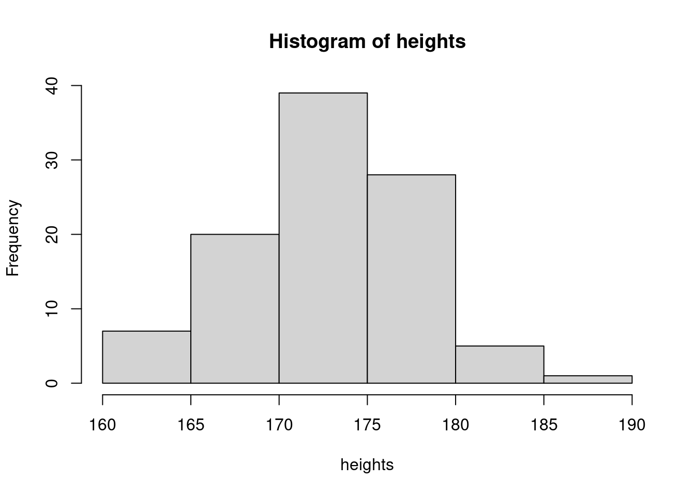
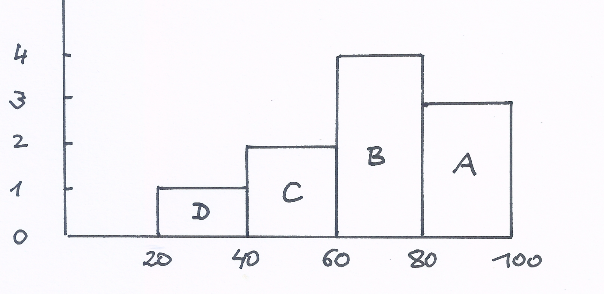

When we analyze data, we usually have to look at lots of them. An example might be income data gained from household surveys. Such a survey will contain a huge number of data points, in the order of magnitude of ten thousands of data. These data need to be summarized, to understand their main characteristics. In this unit you will learn the most important tools for summarizing and communicating lost of data. You are going to learn the principles how data summaries are constructed, what are the properties of these summaries and what needs to be carefully considered. Clearly, when we need to deal with really large data sets, and most modern data sets are too large to be handled manually, we will need the computer. We already did some first steps in R. In this unit we will build on these first steps but enlarge them in a way that will enable you to deal and manipulate large datasets on the computer.
3.1 Understanding variation in a single variable
To summarize data, statisticians often use a graph which is called a histogram. In this section we will discuss all you have to know about histograms and how to use them. Let us start by an example, where we have about 100 data points, which is a lot but not that large that we can not handle them by hand.
The data we want to look at come from measurements of the annual flow of the river Nile at Aswan (formerly) Assuan in Egypt from 1871 to 1970. The units of these measurement in which the annual flow is recorder are 100 Millions of cubic meters, i.e. \(10^8 m^3\).
This is one of the data sets that is bundled with the R distribution and is available to all users of R. They are stored in an R object called Nile.1
1 When you type data() at the R console, you get a list of all datasets that are available with the current distribution of R.
This is how the data look like, when we print them to the R console
We start the construction of a histogram by choosing for the horizontal axes ranges of numerical values - in our case of the river flow data - which are called bins or classes. There is no fixed rule as to how to choose the size of these ranges. These ranges should neither be to fine, nor too coarse. While there are a list of mechanical rules, which you can for example find on Wikipedia2, it is usually best to use your domain knowledge and some experimentation to find out the bin size that works best for your data.
2 See https://en.wikipedia.org/wiki/Histogram#Number_of_bins_and_width
For this example, assume we had chosen a bin size of 1003. When you study the list, you will find that the lowest value is at 456 while the highest value is at 1370. This is already quite tedious to find out by eyeballing the numbers with the small number of values we have chosen for this example. It is impossible to do for really large data sets.
3 Note that this will mean \(100\times 10^8 m^3\) per year.
Now lets make a distribution table like this:
Flow-bin
Frequency
400 - 500
1
500 - 600
0
600 - 700
5
700 - 800
20
800 - 900
25
900 - 1000
19
1000 - 1100
12
1100 - 1200
11
1200 - 1300
6
1300 - 1400
1
In the column Flow-bin we have recorded the bins in steps of 100 and in the right column, Frequency, we have recorded the count of values that are in this bin.
When we make such a tabulation we have to agree on an endpoint convention. This is important, since when a flow value would for instance be measures as exactly 500, in which bin should it be counted: 400-500 or 500-600? You the constructor of the histogram has to take this decision. Let us agree on the convention that when a value falls exactly at the endpoint of the bin, we put it in the next bin. In practice you will usually do a histogram by computer. The code of the computer program has to specify an endpoint convention, so the computer knows what to do when a value coincides with an endpoint.
On the Frequency axes you put the frequency scale: Counts of values. Then for each bin, you plot a bar, which has the width of the bin and the height of the frequency.
Do this for all the bins you have tabulated and you are ready.
The histogram provides a certain aggregation of the data because it sorts the 100 data points into 10 bins, in our example. While loosing some local information on individual data points the global information conveyed by the summary gives us a pretty good idea of the overall pattern of variation on the Nile river flow data.
We can see, for instance, that the most frequent flow is between 800 and 900 and that the variation is fairly symmetric around this bin. In the extremes this most frequent value can half or almost double, so there is quite some spread in the data.
Constructing the river flow histogram
If we had just plotted all individual data points, we also got a picture, though you probably agree that it is not particularly useful.
Histograms are such a common tool in statistics to explore the variation in one variable and the shape, how it is roughly distributed that every statistical software has functions to produce histograms. In R, the language we use in this course there is also such a function. The function name is called hist() and it takes the data as an argument. This is the second graphic function of R you encounter in this course after we played with the barplot()function in the last lecture.
To produce a histogram from the river flow data, we type at the console
hist(Nile)

Now you try
Let us check your understanding of histograms by a little quiz now. The histogram below shows the distribution of the final score in a certain class.
Which block represents the people who scored between 60 and 80?
Ten percent scored between 20 and 40 about what percentage scored between 40 and 60?
About what percentage scored over 60?

Final Score
3.2 Contents
Statistics usually involves lots of data and we need ways to communicate and summarize these data. This chapter introduces the most important concepts.
The empirical distribution of data points
Measures of location and spread.
Skewed data distributions are common and some summary statistics are very sensitive to outlying values.
Summaries always hide some detail.
How to summarize sets of numbers graphically (histograms and box plots)
Useful transformations to reveal patterns
Looking at pairs of numbers, scatter plots, time series as line graphs.
The primary aim in data exploration is to get an idea of the overall variation.